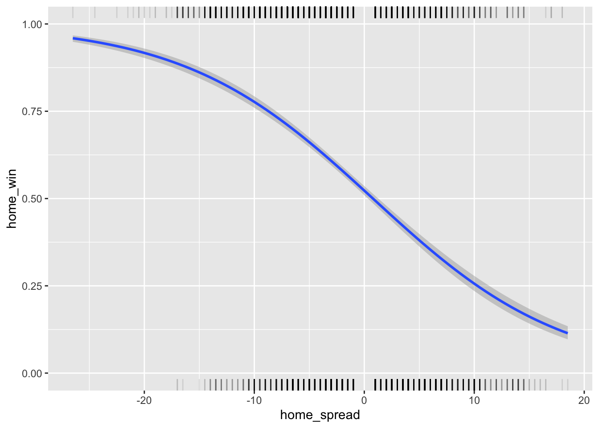
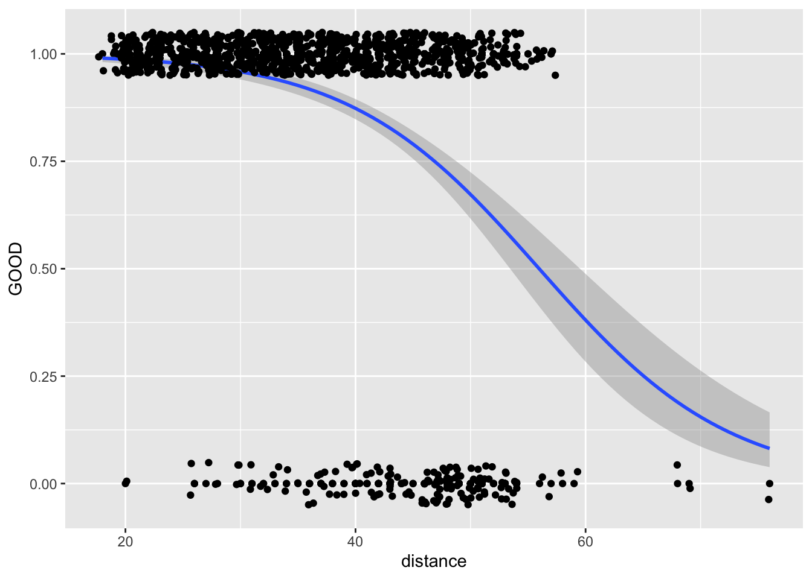
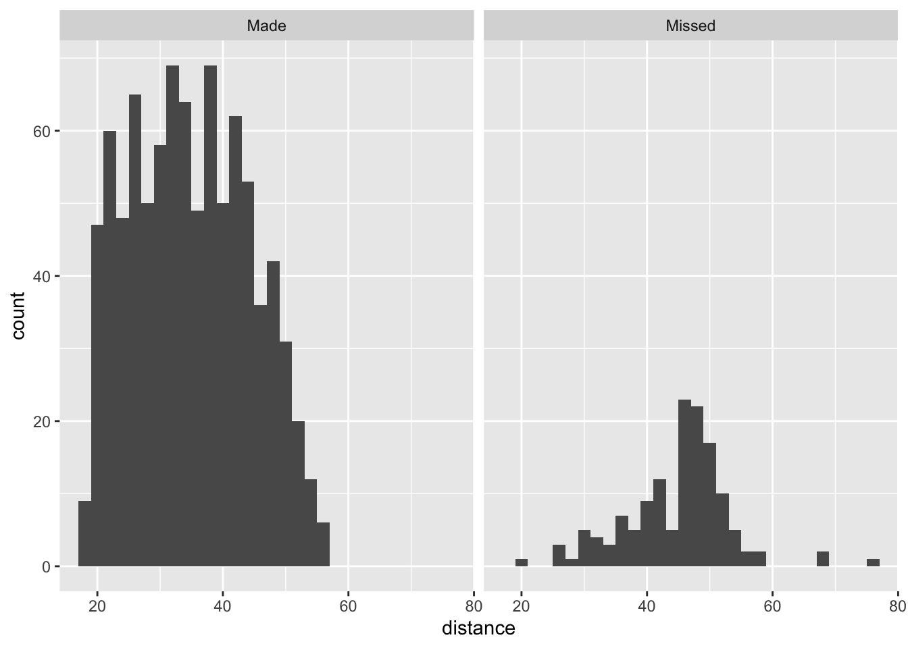

Chapter 10 Logistic Regression
In the previous regression examples, we have considered cases where the response variable is a continuous random variable. There are many cases in sports analytics where the response may be a binary or categorical variable. In such cases, logistic regression is likely a more appropriate model.
Let \(\pi_i\) be the probability be that the response variable, \(Y_i\), is equal to 1 and \(1-\pi_i\) is the probability that \(Y_i\) is equal to 0.
Definition 10.1 The log-odds (or logit) of a probability \(p\) is defined by:
\(logit(p) = log.odds(p) = log\left(\frac{p}{1-p}\right)\)
10.1 Logistic Regression Model
Logistic regression allows us to model the logit as a linear function of the predictor variables.
For example, a simple logistic regression model is defined by:
\(logit(p) = log\left(\frac{p}{1-p}\right) = \beta_0 + \beta_1 x\)
We also have:
\(E[Y_i] = \pi_i = \frac{exp(\beta_0+\beta_1X_i)}{1+exp(\beta_0+\beta_1X_i)}\)
Definition 10.2 The odds ratio of event \(X_1\) relative to event \(X_2\) is defined by:
\(\hat{OR} = \frac{odds_2}{odds_1} = \exp{\hat{\beta}_1}\)
The odds ratio represents the change in odds for a one-unit increase in \(X\).
10.2 Example: NFL Spread and Winning
# Data from Kaggle:
# https://www.kaggle.com/datasets/tobycrabtree/nfl-scores-and-betting-data
nfl_spread <- read_csv("data/nfl_spread_history.csv",show_col_types = F)
names(nfl_spread)## [1] "schedule_date" "schedule_season" "schedule_week"
## [4] "schedule_playoff" "team_home" "score_home"
## [7] "score_away" "team_away" "team_favorite_id"
## [10] "spread_favorite" "over_under_line" "stadium"
## [13] "stadium_neutral" "weather_temperature" "weather_wind_mph"
## [16] "weather_humidity" "weather_detail"nfl_spread %>% slice(1:5) %>% select(1,5,6,7,8,10)## # A tibble: 5 × 6
## schedule_date team_home score_home score_away team_away sprea…¹
## <chr> <chr> <dbl> <dbl> <chr> <dbl>
## 1 9/2/1966 Miami Dolphins 14 23 Oakland Raiders NA
## 2 9/3/1966 Houston Oilers 45 7 Denver Broncos NA
## 3 9/4/1966 San Diego Chargers 27 7 Buffalo Bills NA
## 4 9/9/1966 Miami Dolphins 14 19 New York Jets NA
## 5 9/10/1966 Green Bay Packers 24 3 Baltimore Colts NA
## # … with abbreviated variable name ¹spread_favorite# adjust date format
nfl_spread$schedule_date <- as.Date(nfl_spread$schedule_date, "%m/%d/%Y")
# select games since 2000 and grab variables of interest
nfl_spread <- nfl_spread %>%
filter(schedule_date > "2000-01-01") %>%
select(team_home,score_home,team_away,score_away,
team_favorite_id,spread_favorite)
teams <- read.csv("data/nfl_teams.csv")
teams <- teams %>% filter(team_division != "")
team_names <- teams$team_name
team_ids <- teams$team_id
team_df <- data.frame(favorite_team = team_names, team_favorite_id = team_ids)
team_df %>% slice(1:5) %>% kable(booktabs=T)| favorite_team | team_favorite_id |
|---|---|
| Arizona Cardinals | ARI |
| Atlanta Falcons | ATL |
| Baltimore Ravens | BAL |
| Buffalo Bills | BUF |
| Carolina Panthers | CAR |
nfl_spread <- nfl_spread %>%
inner_join(team_df,by="team_favorite_id",multiple="all")
nfl_spread <- nfl_spread %>%
mutate(home_diff = score_home - score_away,
winning_team = ifelse(score_home > score_away,team_home,team_away),
favorite_win = ifelse(favorite_team == winning_team,1,0),
home_spread = ifelse(team_home==favorite_team,spread_favorite,-spread_favorite),
home_win = ifelse(team_home == winning_team,1,0),
home_won = ifelse(home_win == 1,home_spread,NA),
home_lost = ifelse(home_win == 0,home_spread,NA))
nfl_spread %>%
slice(1:5) %>%
select(team_home,team_away,score_home,score_away,home_spread,home_win) %>%
kable(booktabs=T)| team_home | team_away | score_home | score_away | home_spread | home_win |
|---|---|---|---|---|---|
| Buffalo Bills | Indianapolis Colts | 31 | 6 | 1.5 | 1 |
| Carolina Panthers | New Orleans Saints | 45 | 13 | -8.5 | 1 |
| Chicago Bears | Tampa Bay Buccaneers | 6 | 20 | 3.5 | 0 |
| Dallas Cowboys | New York Giants | 26 | 18 | -6.5 | 1 |
| Denver Broncos | San Diego Chargers | 6 | 12 | -7.0 | 0 |
nfl_spread %>% ggplot(aes(x=home_spread,y=home_win)) +
geom_smooth(method = "glm",
method.args = list(family = "binomial")) +
geom_rug(aes(x = home_won), sides = "t", alpha = 0.1) +
geom_rug(aes(x = home_lost), sides = "b", alpha = 0.1)
mod <- glm(home_win~home_spread,data=nfl_spread,family="binomial")
summary(mod)##
## Call:
## glm(formula = home_win ~ home_spread, family = "binomial", data = nfl_spread)
##
## Deviance Residuals:
## Min 1Q Median 3Q Max
## -2.0869 -1.0708 0.7106 0.9979 2.0586
##
## Coefficients:
## Estimate Std. Error z value Pr(>|z|)
## (Intercept) 0.091060 0.026781 3.40 0.000673 ***
## home_spread -0.115659 0.004612 -25.08 < 2e-16 ***
## ---
## Signif. codes: 0 '***' 0.001 '**' 0.01 '*' 0.05 '.' 0.1 ' ' 1
##
## (Dispersion parameter for binomial family taken to be 1)
##
## Null deviance: 9066.2 on 6614 degrees of freedom
## Residual deviance: 8344.1 on 6613 degrees of freedom
## AIC: 8348.1
##
## Number of Fisher Scoring iterations: 4predict(mod,newdata=data.frame(home_spread = c(-10,-5,-1,0,1,5,10)),type="response")## 1 2 3 4 5 6 7
## 0.7768932 0.6613590 0.5514965 0.5227493 0.4938505 0.3805448 0.2562536Write the estimated logistic regression equation.
Determine and interpret the change in log-odds for a one-unit increase in home_spread.
Estimate the probability that the home team wins given they are 5 point favorites.
10.3 Multiple Logistic Regression
We can extend the framework of the simple logistic regression model to include multiple predictor variables. In this case, we have the following multiple logistic regression model.
\(logit(p) = log\left(\frac{p}{1-p}\right) = \beta_0 + \beta_1 x_1 + \ldots + \beta_p x_p\)
We also have:
\(E[Y_i] = \pi_i = \frac{exp(\beta_0+\beta_1X_i+\ldots + \beta_pX_p)}{1+exp(\beta_0+\beta_1X_i+\ldots + \beta_pX_p)}\)
10.4 Example: Field Goal Success
# Example outlined at:
# http://rstudio-pubs-static.s3.amazonaws.com/
# 264999_c04ec6882e474eb9ab5f3feb3e62e40d.html
nfl_fg <- read_csv("data/nfl2008_fga.csv",show_col_types = F)
names(nfl_fg)## [1] "GameDate" "AwayTeam" "HomeTeam" "qtr" "min" "sec"
## [7] "kickteam" "def" "down" "togo" "kicker" "ydline"
## [13] "name" "distance" "homekick" "kickdiff" "timerem" "offscore"
## [19] "defscore" "season" "GOOD" "Missed" "Blocked"nfl_fg %>%
slice_head(n=10) %>%
select(1:10) %>%
kable(booktabs=T)| GameDate | AwayTeam | HomeTeam | qtr | min | sec | kickteam | def | down | togo |
|---|---|---|---|---|---|---|---|---|---|
| 20081130 | IND | CLE | 1 | 47 | 2 | IND | CLE | 4 | 11 |
| 20081005 | IND | HOU | 1 | 54 | 47 | IND | HOU | 4 | 3 |
| 20081228 | TEN | IND | 1 | 45 | 20 | IND | TEN | 4 | 3 |
| 20081012 | BAL | IND | 1 | 45 | 42 | IND | BAL | 4 | 1 |
| 20080907 | CHI | IND | 1 | 50 | 56 | IND | CHI | 4 | 21 |
| 20081116 | HOU | IND | 1 | 50 | 43 | IND | HOU | 4 | 7 |
| 20081123 | IND | SD | 1 | 46 | 45 | IND | SD | 4 | 5 |
| 20081207 | KC | DEN | 1 | 52 | 34 | KC | DEN | 4 | 7 |
| 20081130 | KC | OAK | 1 | 46 | 12 | KC | OAK | 4 | 7 |
| 20090118 | PHI | ARI | 1 | 49 | 46 | PHI | ARI | 4 | 9 |
nfl_fg <- nfl_fg %>%
mutate(Result = ifelse(GOOD==1,"Made","Missed"))
nfl_fg %>%
ggplot(aes(x=distance,y=GOOD)) +
geom_point() +
geom_smooth(method = "glm",
method.args = list(family = "binomial")) +
geom_jitter(height = 0.05)## `geom_smooth()` using formula = 'y ~ x'
nfl_fg %>% ggplot(aes(distance)) + geom_histogram() + facet_grid(~Result)
nfl_fg <- read_csv("data/nfl2008_fga.csv",show_col_types = F)
names(nfl_fg) <- tolower(names(nfl_fg))
names(nfl_fg) <- str_replace(names(nfl_fg), "team", "_team")
names(nfl_fg) <- str_replace(names(nfl_fg), "score", "_score")
# rename some other variables
nfl_fg <- nfl_fg %>%
dplyr::rename(game_date = gamedate,
to_go = togo,
yd_line = ydline,
home_kick = homekick,
time_rem = timerem)
nfl_fg <- nfl_fg %>%
dplyr::rename(kick_score_diff = kickdiff,
min_rem = min,
sec_rem = sec,
def_team = def,
made = good)
library(lubridate)
nfl_fg$game_date <- ymd(nfl_fg$game_date)
kicker_list <- nfl_fg %>%
group_by(name, kicker, kick_team) %>%
summarise(n = n(), made = mean(made)) %>%
arrange(name)
kicker_list %>% data.frame() %>% slice_head(n=10) %>% kable(booktabs=T)| name | kicker | kick_team | n | made |
|---|---|---|---|---|
| A.Vinatieri | 15 | IND | 26 | 0.8461538 |
| C.Barth | 18 | KC | 12 | 0.8333333 |
| D.Akers | 29 | PHI | 50 | 0.9000000 |
| D.Carpenter | 19 | MIA | 26 | 0.8846154 |
| D.Rayner | 9 | CIN | 1 | 1.0000000 |
| G.Hartley | 24 | NO | 13 | 1.0000000 |
| J.Brown | 34 | STL | 1 | 0.0000000 |
| J.Brown | 35 | STL | 35 | 0.8857143 |
| J.Carney | 25 | NYG | 43 | 0.9302326 |
| J.Elam | 2 | ATL | 32 | 0.9375000 |
# fix duplicate names and their IDs
index <- which(nfl_fg$name == "S.Hauschka" & nfl_fg$kicker == 3)
nfl_fg[["kicker"]][[index]] <- 4
index <- which(nfl_fg$name == "J.Brown" & nfl_fg$kicker == 34)
nfl_fg[["kicker"]][[index]] <- 35
index <- which(nfl_fg$kicker == 9 & nfl_fg$name == "D.Rayner")
nfl_fg[["kicker"]][[index]] <- 38
index <- which(nfl_fg$kicker == 26 & nfl_fg$name == "M.Nugent")
nfl_fg[["kicker"]][[index]] <- 39
kicker_list <- nfl_fg %>%
group_by(name, kicker, kick_team) %>%
summarise(n = n(), made = mean(made)) %>%
arrange(name)
kicker_list %>% data.frame() %>% slice_head(n=10) %>% kable(booktabs=T)| name | kicker | kick_team | n | made |
|---|---|---|---|---|
| A.Vinatieri | 15 | IND | 26 | 0.8461538 |
| C.Barth | 18 | KC | 12 | 0.8333333 |
| D.Akers | 29 | PHI | 50 | 0.9000000 |
| D.Carpenter | 19 | MIA | 26 | 0.8846154 |
| D.Rayner | 38 | CIN | 1 | 1.0000000 |
| G.Hartley | 24 | NO | 13 | 1.0000000 |
| J.Brown | 35 | STL | 36 | 0.8611111 |
| J.Carney | 25 | NYG | 43 | 0.9302326 |
| J.Elam | 2 | ATL | 32 | 0.9375000 |
| J.Feely | 27 | NYJ | 28 | 0.8571429 |
# dataframe of kickers with less than 5 attempts
temp <- nfl_fg %>%
group_by(name, kicker) %>%
summarise(n = n(), made = mean(made)) %>%
filter(n < 5)
# list of names of kickers with less than 5 attempts
names = temp$name
# filter dataset to not include the kickers with less than 5 attempts
for (n in names) {
nfl_fg <- nfl_fg %>% filter(name != n)
}
temp <- nfl_fg %>%
group_by(name) %>%
summarise(n= n(), made_pct = mean(made)) %>%
arrange(desc(made_pct), desc(n)) %>%
mutate(kicker_rank = rank(desc(made_pct), ties.method = "first")) %>%
arrange(kicker_rank)
temp %>% slice(1:10) %>% kable(booktabs=T)| name | n | made_pct | kicker_rank |
|---|---|---|---|
| J.Hanson | 22 | 1.0000000 | 1 |
| G.Hartley | 13 | 1.0000000 | 2 |
| R.Gould | 29 | 0.9655172 | 3 |
| J.Elam | 32 | 0.9375000 | 4 |
| J.Carney | 43 | 0.9302326 | 5 |
| N.Folk | 23 | 0.9130435 | 6 |
| N.Kaeding | 34 | 0.9117647 | 7 |
| R.Longwell | 34 | 0.9117647 | 8 |
| K.Brown | 33 | 0.9090909 | 9 |
| J.Kasay | 31 | 0.9032258 | 10 |
temp <- temp %>%
select(name, kicker_rank)
nfl_fg <- left_join(nfl_fg, temp, by = "name")
nfl_fg$name <- NULL
nfl_fg$kicker <- NULLfg_mod <- glm(made ~ distance, data = nfl_fg, family = "binomial")
summary(fg_mod)##
## Call:
## glm(formula = made ~ distance, family = "binomial", data = nfl_fg)
##
## Deviance Residuals:
## Min 1Q Median 3Q Max
## -2.9834 0.1960 0.3393 0.5766 1.2420
##
## Coefficients:
## Estimate Std. Error z value Pr(>|z|)
## (Intercept) 6.9191 0.5599 12.358 <2e-16 ***
## distance -0.1240 0.0126 -9.842 <2e-16 ***
## ---
## Signif. codes: 0 '***' 0.001 '**' 0.01 '*' 0.05 '.' 0.1 ' ' 1
##
## (Dispersion parameter for binomial family taken to be 1)
##
## Null deviance: 803.90 on 1029 degrees of freedom
## Residual deviance: 671.21 on 1028 degrees of freedom
## AIC: 675.21
##
## Number of Fisher Scoring iterations: 6predict(fg_mod,newdata=data.frame(distance = c(30,40,50,60,70)),type="response")## 1 2 3 4 5
## 0.9607681 0.8763128 0.6720984 0.3722482 0.1464325fg_mod2 <- glm(made ~ distance+kicker_rank, data = nfl_fg, family = "binomial")
summary(fg_mod2)##
## Call:
## glm(formula = made ~ distance + kicker_rank, family = "binomial",
## data = nfl_fg)
##
## Deviance Residuals:
## Min 1Q Median 3Q Max
## -2.9083 0.1780 0.3124 0.5354 1.4893
##
## Coefficients:
## Estimate Std. Error z value Pr(>|z|)
## (Intercept) 7.90455 0.61550 12.842 < 2e-16 ***
## distance -0.12238 0.01278 -9.577 < 2e-16 ***
## kicker_rank -0.05646 0.01132 -4.988 6.11e-07 ***
## ---
## Signif. codes: 0 '***' 0.001 '**' 0.01 '*' 0.05 '.' 0.1 ' ' 1
##
## (Dispersion parameter for binomial family taken to be 1)
##
## Null deviance: 803.90 on 1029 degrees of freedom
## Residual deviance: 644.77 on 1027 degrees of freedom
## AIC: 650.77
##
## Number of Fisher Scoring iterations: 6predict(fg_mod2,newdata=data.frame(distance = 50,kicker_rank=1),type="response")## 1
## 0.8492647Write the estimated logistic regression equation.
Determine and interpret the change in log-odds for a one-unit increase in distance while holding kicker rank constant.
Determine and interpret the change in log-odds for a one-unit increase in kicker rank while holding distance constant.
Estimate the probability that a field goal is good given that it was from 50 yards and was kicked by the top ranked kicker.